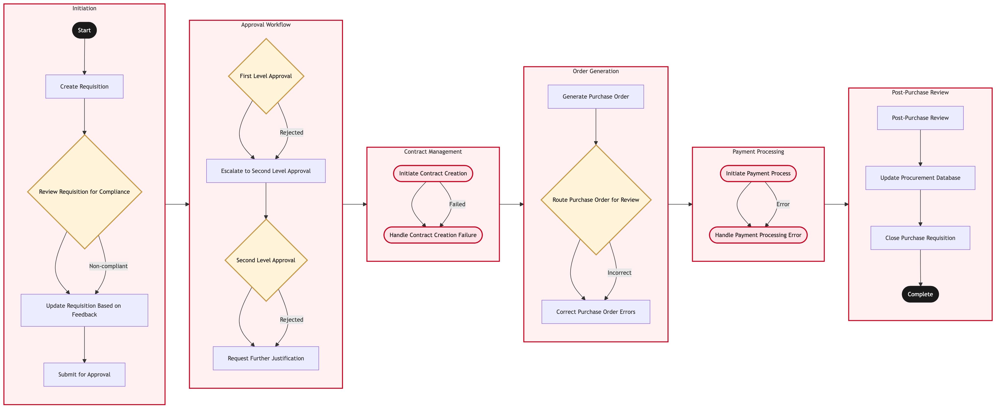

Updated 2026-08-21
Purchase Requisition and Approval
Process flow
Click to zoom

Process steps
▼
Phase 1 — Initiation
4 steps
| Step | Activity | Role | System | Input | Output | KPI | Dec | Exc | Pain point |
|---|---|---|---|---|---|---|---|---|---|
| 1.1 | Create Requisition | Procurement Analyst | SAP S/4HANAA | User input, budget constraints | Purchase requisition draft | Time to create requisition < 2 hours | N | N | Budget constraint checks may delay submission |
| 1.2 | Review Requisition for Compliance | Procurement Analyst | SAP S/4HANAA | Requisition draft | Compliance check results | Compliance review accuracy > 95% | Y | N | Misinterpretation of procurement policies can lead to delays |
| 1.3 | Update Requisition Based on Feedback | Procurement Analyst | SAP S/4HANAA | Compliance feedback | Updated requisition draft | Number of updates < 3 | N | N | Multiple iterations can consume significant time |
| 1.4 | Submit for Approval | Procurement Analyst | SAP S/4HANAA | Updated requisition draft | Approval request sent | Time to submit < 1 hour | N | N | System downtime can cause delays in submission |
▼
Phase 2 — Approval Workflow
4 steps
| Step | Activity | Role | System | Input | Output | KPI | Dec | Exc | Pain point |
|---|---|---|---|---|---|---|---|---|---|
| 2.1 | First Level Approval | Procurement Manager | SAP S/4HANAA | Approval request | Approval or rejection | First level approval time < 8 hours | Y | N | Managers may be overwhelmed with requests, causing delays |
| 2.2 | Escalate to Second Level Approval | Procurement Manager | SAP S/4HANAA | Requisition and rejection reason | Second level approval request | Escalation time < 2 hours | N | N | Escalation paths may be unclear |
| 2.3 | Second Level Approval | Senior Procurement Manager | SAP S/4HANAA | Approval request | Final approval or rejection | Second level approval time < 16 hours | Y | N | Senior managers may require additional information, causing delays |
| 2.4 | Request Further Justification | Senior Procurement Manager | SAP S/4HANAA | Requisition and rejection reason | Justified requisition | Time to justify < 1 day | N | N | Justifications may need multiple rounds of review |
▼
Phase 3 — Contract Management
2 steps
| Step | Activity | Role | System | Input | Output | KPI | Dec | Exc | Pain point |
|---|---|---|---|---|---|---|---|---|---|
| 3.1 | Initiate Contract Creation | Contracts Officer | SAP AribaA | Approved requisition | Contract draft | Time to create contract < 4 hours | N | Y | Supplier data discrepancies can cause delays |
| 3.2 | Handle Contract Creation Failure | Contracts Officer | SAP AribaA | Error message | Corrected requisition or contract draft | Time to resolve failure < 1 day | N | Y | System bugs can disrupt contract creation |
▼
Phase 4 — Order Generation
3 steps
| Step | Activity | Role | System | Input | Output | KPI | Dec | Exc | Pain point |
|---|---|---|---|---|---|---|---|---|---|
| 4.1 | Generate Purchase Order | Procurement Analyst | SAP S/4HANAA | Approved contract | Purchase order | Time to generate order < 2 hours | N | N | Order generation errors can cause delays |
| 4.2 | Route Purchase Order for Review | Procurement Analyst | SAP S/4HANAA | Purchase order | Reviewed purchase order | Review time < 8 hours | Y | N | Order discrepancies may require manual corrections |
| 4.3 | Correct Purchase Order Errors | Procurement Analyst | SAP S/4HANAA | Purchase order and error details | Corrected purchase order | Correction time < 1 day | N | N | Manual corrections can be time-consuming |
▼
Phase 5 — Payment Processing
2 steps
| Step | Activity | Role | System | Input | Output | KPI | Dec | Exc | Pain point |
|---|---|---|---|---|---|---|---|---|---|
| 5.1 | Initiate Payment Process | Accounts Payable Analyst | SAP S/4HANAA | Purchase order and invoice | Payment instruction | Time to initiate payment < 2 hours | N | Y | Payment processing errors can cause delays |
| 5.2 | Handle Payment Processing Error | Accounts Payable Analyst | SAP S/4HANAA | Error message | Corrected payment instruction | Time to resolve error < 1 day | N | Y | System integrations can fail, disrupting payments |
▼
Phase 6 — Post-Purchase Review
3 steps
| Step | Activity | Role | System | Input | Output | KPI | Dec | Exc | Pain point |
|---|---|---|---|---|---|---|---|---|---|
| 6.1 | Post-Purchase Review | Procurement Analyst | SAP S/4HANAA | Completed purchase transaction | Review report | Review time < 1 day | N | N | Large volumes of transactions can overwhelm analysts |
| 6.2 | Update Procurement Database | Procurement Analyst | SAP S/4HANAA | Review report | Updated procurement database | Time to update < 2 hours | N | N | Database update errors can cause data loss |
| 6.3 | Close Purchase Requisition | Procurement Analyst | SAP S/4HANAA | Updated database | Closed requisition record | Time to close < 1 hour | N | N | Manual closing can be prone to errors |
Swim lanes
Procurement Analyst1.1 1.2 1.3 1.4 4.1 4.2 4.3 6.1 6.2 6.3
Procurement Manager2.1 2.2
Senior Procurement Manager2.3 2.4
Contracts Officer3.1 3.2
Accounts Payable Analyst5.1 5.2
Systems touched
SAP S/4HANAASAP AribaA
Key performance indicators
- Average time for purchase requisition creation and approval: < 48 hours
- First level approval accuracy: > 90%
- Second level approval accuracy: > 85%
- Contract creation success rate: > 95%
- Purchase order generation error rate: < 2%
Risks and control points
- Inaccurate compliance checks leading to rejected requisitions
- Overwhelmed managers causing delays in approvals
- Supplier data discrepancies disrupting contract creation
- Order generation errors delaying payment processing
- Database update errors causing data loss
Air Canada Process Wiki — process and systems reference compiled from public sources
for IT Application Management and User Support pre-sales discovery.
Built 2026-08-21. Every system carries an evidence tier: tier C is an industry pattern and tier U is an open
question, and neither should be asserted as fact about Air Canada without confirmation in discovery.
Not affiliated with or endorsed by Air Canada. Air Canada, Aeroplan and Altitude are trademarks of Air Canada.